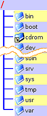

Verzeichnisstruktur
Achtung!
Für jegliche Veränderungen an Dateien oder Ordnern außerhalb des Homeverzeichnis sind Root-Rechte erforderlich. Änderungen sollte man nur vornehmen, wenn man genau weiß, welche Auswirkungen das haben kann.
Dieser Artikel wurde für die folgenden Ubuntu-Versionen getestet:
Dieser Artikel ist größtenteils für alle Ubuntu-Versionen gültig.
 Dieser Artikel beschreibt die Verzeichnisstruktur eines Linux-Systems. In verschiedenen Systemverzeichnissen liegen alle elementaren Programme und Konfigurationsdateien. In der Regel können in diesen Verzeichnissen (Ordnern) nur mit Root-Rechten Veränderungen vorgenommen werden. Obwohl dies gerade Ein- und Umsteigern gerne Probleme bereitet, ist dieser Zwang ein essentieller Baustein der Systemsicherheit.
Lange Zeit brachte jede Linux-Distribution ihre eigenen Vorstellungen vom Aufbau des Dateisystems mit. Um eine Vereinheitlichung und den Datenaustausch zwischen den Distributionen zu erleichtern, hat man ein Gremium aus den wichtigsten Distributoren gebildet. Dieses Gremium erarbeitete den "Filesystem Hierarchy Standard" (FHS). Auch die Verzeichnisstruktur von Ubuntu richtet sich nach diesem Standard.
Die hier gezeigte Verzeichnisstruktur berücksichtigt eine Installation mit gesonderter Bootpartition nicht. Die Auflistung erfolgt in alphabetischer Reihenfolge. Noch mehr Informationen - auch über viele Unterverzeichnisse - kann man der Manpage von hier entnehmen. Das Wort "hier" steht in diesem Fall für "Description of the file system hierarchy", zu deutsch: "Beschreibung der Hierarchie des Dateisystems".
man hier
/ (Root)¶
Erste Verzeichnisebene; entspricht in der Regel der Bootpartition (Ausnahme: Eigene Bootpartition); enthält neben den im Folgenden genannten Unterverzeichnissen auch symbolischen Verknüpfungen für initrd.img und vmlinuz (siehe /boot)
/bin¶
Von: binaries (Programme); muss bei Systemstart vorhanden sein; enthält für Linux unverzichtbare Programme; diese Programme können im Gegensatz zu /sbin von allen Benutzern ausgeführt werden; /bin darf keine Unterverzeichnisse enthalten.
/boot¶
Muss bei Systemstart vorhanden sein; Enthält zum Booten benötigte Dateien. Beispiele: Kernel "vmlinuz-versionsnummer-generic" (für Desktopsysteme), "vmlinuz-versionsnummer-server" (für Serversysteme), "vmlinuz-versionsnummer-virtual" (für virtuelle Maschinen), initiale Ramdisk "initrd.img-versionsnummer-generic"/"-server"/"-virtual" und das Programm für den Memorytest memtest86.bin
Unterverzeichnis(se):
/boot/efi: Enthält EFI-Programme - nur bei eingesetztem und aktiv genutztem EFI
/dev¶
Von: devices (Geräte); muss bei Systemstart vorhanden sein; enthält alle Gerätedateien, über die die Hardware im Betrieb angesprochen wird; Gerätedateien für Hot-Plug-Systeme (z.B. USB, IEEE1394) werden von udev erstellt
/etc¶
Von: et cetera ("alles übrige"), später auch: editable text configuration (änderbare Text Konfiguration); muss bei Systemstart vorhanden sein; enthält Konfigurations- und Informationsdateien des Basissystems. Beispiele: fstab, hosts, lsb-release, blkid.tab; hier liegende Konfigurationsdateien können durch gleichnamige Konfigurationsdateien im Homeverzeichnis überlagert werden. Beispiel: bash.bashrc
Unterverzeichnisse u.a.:
/etc/default: Enthält u.a. die Konfigurationsdatei grub
/etc/grub.d: Enthält Skripte für Grub_2
/etc/opt: Verzeichnisse und Konfigurationsdateien für Programme in /opt
/etc/X11: Verzeichnisse und Konfigurationsdateien des XServer; Beispiel: xorg.conf
/etc/network: Verzeichnisse und Konfigurationsdateien des Netzwerkes: Beispiel interfaces
/etc/init.d: Enthält Start- und Stopskripte; Siehe Dienste
/etc/sgml: Konfigurationsdateien für SGML (optional)
/etc/xml: Konfigurationsdateien für XML (optional)
/home¶
Von: home-directory (Heimatverzeichnis); enthält pro Benutzer ein Unterverzeichnis; jedes Verzeichnis wird nach dem Anmeldenamen benannt; ausführlicher Artikel: Homeverzeichnis
/lib¶
Von: libraries (Bibliotheken); muss bei Systemstart vorhanden sein; enthält unverzichtbare Bibliotheken fürs Booten und die dynamisch gelinkten Programme des Basissystems; mindestens notwendige Dateien bzw. symbolische Verknüpfungen: libc.so.* (C-Bibliotheken), ld* (Bibliotheksdaten: Versionen, Zugriffspfade,...)
Unterverzeichnisse u.a.:
/lib/modules: Kernelmodule
/lib/udev: Bibliotheken und Programme für udev
/lib/linux-restricted-modules: Speicherort für eingeschränkte Treiber (z.B. Grafikkarte); siehe restricted-manager
/lost+found¶
(verloren und gefunden); Dateien und Dateifragmente, die beim Versuch, ein defektes Dateisystem zu reparieren, übrig geblieben sind. Das Verzeichnis ist auf Partitionen mit reiserfs oder xfs nicht vorhanden. Siehe auch Datenrettung.
/media¶
Für (Speicher-)Medien. Enthält Unterverzeichnisse, welche als mount- oder Einhängepunkte für transportable Medien wie z.B. externe Festplatten, USB-Sticks, CD-ROMs, DVDs und andere Datenträger dienen. Ubuntu legt hier auch die Einhängepunkte für Partitionen an. Unterverzeichnisse sind u.a.:
/media/floppy: Einhängepunkt für Disketten
/media/cdrom0: Einhängepunkt für CD-ROMs
Ab Ubuntu 12.10 wurde die Verwendung des Benutzernamens eingeführt. Beispiele:
/media/BENUTZERNAME/floppy: Einhängepunkt für Disketten
/media/BENUTZERNAME/cdrom0: Einhängepunkt für CD-ROMs
/mnt¶
Von: mount (eingehängt); normalerweise leer; kann für temporär eingehängte Partitionen verwendet werden. Für Datenträger, die hier eingehängt werden, wird im Gegensatz zu /media kein Link auf dem Desktop angelegt (gilt nur für GNOME).
/opt¶
Von: optional; ist für die manuelle Installation von Programmen gedacht, die ihre eigenen Bibliotheken mitbringen und nicht zur Distribution gehören; siehe /opt; Speicherort für selbst erstellte Programme siehe /usr/local in /usr
/proc¶
Von: processes (laufende Programme); muss bei Systemstart vorhanden sein; enthält Schnittstellen zum aktuell geladenen Kernel und seinen Prozeduren; Dateien lassen sich mittels cat auslesen; Beispiele: version (Kernelversion), swaps (Swapspeicherinformationen), cpuinfo, interrupts, usw.;
Unterverzeichnisse u.a.:
/proc/Nummern: Jedes Programm mit Prozessnummer als Verzeichnisnamen; darin z.B. die Datei status, die Auskunft über den Prozess liefert (Programmname, Nummer, Speichernutzung,...)
Experten-Info:
/proc ist im eigentlichen Sinne kein Verzeichnis, sondern ein spezielles, virtuelles Dateisystem vom Typ "proc", welches lediglich Schnittstellen zu Kernelprozeduren beinhaltet.
/root¶
Ist das Homeverzeichnis des Superusers (root). Der Grund, wieso sich das /root-Verzeichnis im Wurzelverzeichnis und nicht im Verzeichnis /home befindet, ist, dass das Homeverzeichnis von Root immer erreichbar sein muss, selbst wenn die Home-Partition aus irgendeinem Grund (Rettungs-Modus, Wartungsarbeiten) mal nicht eingehängt ist.
Hinweis:
Programme, die per gksudo bzw. kdesudo - nicht aber sudo - ausgeführt werden, bekommen dieses Verzeichnis als Heimatverzeichnis zugewiesen. Dies hat z.B. Auswirkungen auf zu installierende Programme oder gelöschte Dateien (diese findet man dann unter /root/.local/Trash)
/run¶
Die Benutzung dieses Ordners wurde erst mit Ubuntu 11.10 eingeführt und dient als Ersatz für bisher verwendete Ordner:
/run (bisher: /var/run, siehe auch /var)
/run/lock (bisher: /var/lock)
/run/shm (bisher: /dev/shm, siehe auch /dev)
/sbin¶
Von: system binaries (Systemprogramme); muss bei Systemstart vorhanden sein; enthält alle Programme für essentielle Aufgaben der Systemverwaltung; Programme können nur vom Systemadministrator (root) oder mit Superuserrechten ausgeführt werden; Beispiele: shutdown (Herunterfahren), make2fs, lsmod (Kernelmodule)
/srv¶
Von: services (Dienste); Verzeichnisstruktur noch nicht genau spezifiziert; soll Daten der Dienste enthalten; unter Ubuntu in der Regel leer.
/sys¶
Von: system; im FHS noch nicht spezifiziert; erst ab Kernel 2.6. im Verzeichnisbaum enthalten; besteht ebenso wie /proc hauptsächlich aus Kernelschnittstellen
Experten-Info:
/sys ist im eigentlichen Sinne kein Verzeichnis, sondern ein spezielles virtuelles Dateisystem vom Typ "sysfs", welches ebenso wie /proc lediglich Schnittstellen zu Kernelprozeduren beinhaltet.
/tmp¶
Von: temporary (temporär); enthält temporäre Dateien von Programmen; Verzeichnis soll laut FHS beim Booten geleert werden.
/usr¶
Von: user (siehe: Herkunft); enthält die meisten Systemtools, Bibliotheken und installierten Programme; der Name ist historisch bedingt - früher, als es /home noch nicht gab, befanden sich hier auch die Benutzerverzeichnisse;
Hinweis:
Da für die (De-)Installation von Programmen die Paketverwaltung verantwortlich ist, sollte dieses Verzeichnis (abgesehen von /usr/local) nur von der Paketverwaltung angetastet werden.
Unterverzeichnisse u.a.:
/usr/bin : Anwenderprogramme; Hier liegen die Desktopumgebungen und die dazu gehörigen Programme, aber auch im Nachhinein über die Paketverwaltung installierte Programme, wie Audacity. Hier liegen aber nicht die manuell installierten Programme (die in /opt installiert werden).
/usr/include : Header-Dateien für C-Programme (nur für Programmierer interessant)
/usr/lib : Bibliotheken
/usr/local : Das Verzeichnis /usr/local enthält noch einmal die gleiche Verzeichnisstruktur wie /usr und ist für Programme gedacht, die man an der Paketverwaltung vorbei installieren möchte, z.B. selbst kompilierte Programme. Bei einem neu installierten Ubuntu enthält es höchstens leere Ordner.
/usr/sbin : für Linux nicht unbedingt notwendige Systemprogramme; Beispiel: dmidecode
/usr/share : im Gegensatz zu /var für statische, sich nicht ändernde Dateien; ist Architektur unabhängig, nicht aber vom Betriebssystem (z.B. können sich "Ubuntu 8.10 i386" und "Ubuntu 8.10 amd64" dieses Verzeichnis teilen, aber nicht "Ubuntu 8.10" und "Ubuntu 9.04")
/usr/share/applications : Programmstarter, die für Anwendungsmenüs genutzt werden
/usr/share/man : Manpages
/var¶
Von variable (variabel); enthält nur Verzeichnisse; Dateien in den Verzeichnissen werden von den Programmen je nach Bedarf geändert (im Gegensatz zu /etc); Beispiele: Log-Dateien, Spielstände, Druckerwarteschlange
Unterverzeichnisse u.a.:
/var/log : Alle Log-Dateien der Systemprogramme; Beispiele: Xorg.0.log (Log-Datei des XServer), kern.log (Logdatei des Kernels), dmesg (letzte Kernelmeldungen), messages (Systemmeldungen); Siehe auch Logdateien
/var/games : Spielstände von Linuxspielen
/var/run : Dateien, die den Zustand des Gesamtsystems speichern; Inhalt wird bei jedem Booten gelöscht und neu geschrieben (siehe auch /run)
/var/tmp : Daten, die bei einem Reboot zwischengespeichert werden müssen (nicht verlorengehen sollen)
/var/www : Im FHS nicht vorhanden, bei Ubuntu das "document root" des Webservers Apache
/var/spool : Druckaufträge
Aufteilen der Verzeichnisse auf verschiedene Partitionen¶
Es ist möglich, die Dateisystemhierachie auf verschiedene Dateisysteme (unter Umständen sogar auf verschiedene Speichermedien wie z.B. RAIDs) auszulagern; dies hat den Vorteil, dass Performance und Datensicherheit für bestimmte Teile der Hierarchie gewährleistet werden können.
Hinweis:
Bitte beachte, dass dies nur ein Vorschlag ist. Abhängig von den installierten Anwendungen ist diese Konfiguration mehr oder weniger sinnvoll. Auch mit nur einer Partition kann man ein System sinnvoll betreiben!
Ein typisches Desktop-System könnte wie folgt partitioniert sein:
Für das Wurzelverzeichnis (/-Dateisystem) mindestens 10 Gigabyte
Für /boot sollte auf eine eigene Partition möglichst verzichtet werden (was aber nicht immer geht; verschlüsselte Systeme setzen eine zwingend voraus). Siehe auch Manuelle Partitionierung.
Wenn man den Ruhezustand nutzen will (empfehlenswert), benötigt man für die Swap-Partition 5% mehr als der Arbeitsspeicher groß ist. Ansonsten kann bei sehr viel Arbeitsspeicher u.U. auf Swap verzichtet werden.
Für das Homeverzeichnis soviel wie man benötigt, da dort alle persönlichen Daten liegen
Ein typischer Server könnte so partitioniert sein; es ist zu beachten, dass verschiedene Serverdienste eine andere Partitionierung erfordern!
Für das Wurzelverzeichnis (/-Dateisystem) mindestens 5 Gigabyte
Für /boot sollte auf eine eigene Partition möglichst verzichtet werden (was aber nicht immer geht; siehe oben)
Der Swap sollte so groß sein wie der vorhandene Arbeitsspeicher. Mehr ist nur in Ausnahmen sinnvoll.
Für /var sollte es schon mehr sein, da fast alle Server-Dienste (E-Mail, Webserver, Datenbanken) ihre Daten hier ablegen
Links¶
Filesystem Hierarchy Standard (FHS)
 - Dokumentation
- DokumentationVerzeichnisse in 5 1/2 Minuten erklärt
 - Video des Vortrags von Sebastian Bator, Ubucon 12/2012
- Video des Vortrags von Sebastian Bator, Ubucon 12/2012Wofür steht die Abkürzung /usr?
- Newsgroup comp.os.linux.misc, 12/2005Durch den Verzeichnisdschungel - Der Verzeichnisbaum von Linux
- EasyLinux, 12/2003
- Erstellt mit Inyoka
-
 2004 – 2017 ubuntuusers.de • Einige Rechte vorbehalten
2004 – 2017 ubuntuusers.de • Einige Rechte vorbehalten
Lizenz • Kontakt • Datenschutz • Impressum • Serverstatus -
Serverhousing gespendet von